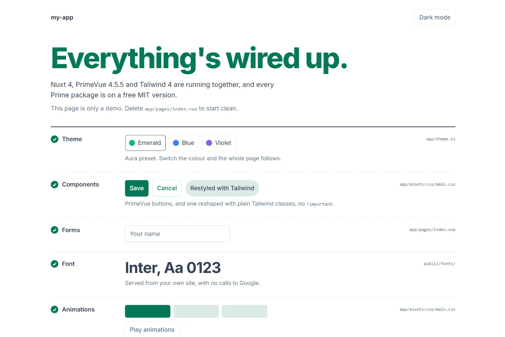

localhost:3000

~/projects
$
npm create nuxt-primevue@latest my-app
✓
Prime packages pinned to free MIT versions
Installing with npm...
✓
Git repository created with one initial commit
Next steps:
cd my-app
npm run dev
~/client-app
$
npx create-nuxt-primevue doctor --check
✗
@primeuix/themes 3.1.0
licence: "SEE LICENSE IN LICENSE.md"
(not MIT)
✗
primeicons 8.0.2
licence: "SEE LICENSE IN LICENSE.md"
(not MIT)
✗
primevue 5.0.4
licence: "SEE LICENSE IN LICENSE.md"
(not MIT)
~/my-app
$
npx create-nuxt-primevue doctor --check
✓
13 Prime package(s) installed, all on the MIT licence.
$
npm run build
Licence check passed: 13 Prime package(s), all MIT.